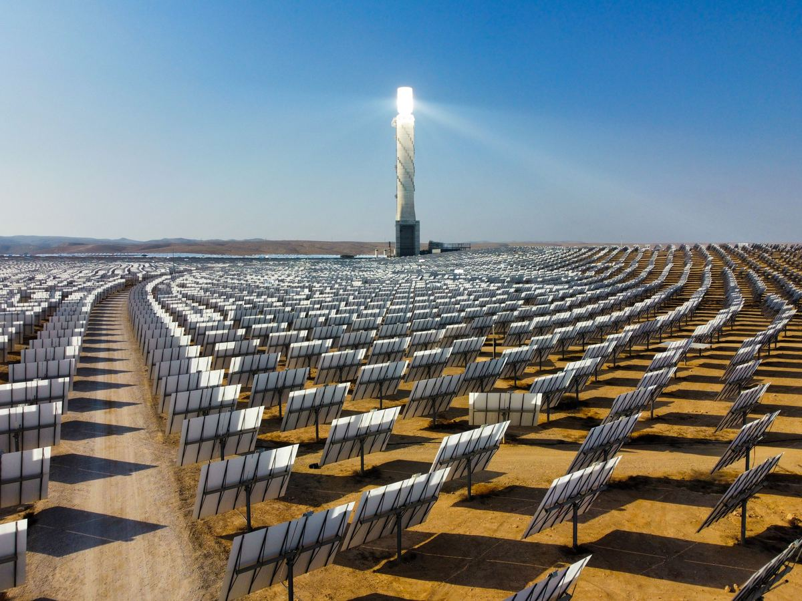

If you want to know how much energy a solar array will make in a day, one number does most of the work: peak sun hours. Multiply your system size by the peak sun hours for your location and you're most of the way to an energy estimate. But the term trips a lot of people up, because it sounds like it should mean "how long the sun is up" — and it doesn't.
What is a peak sun hour?
Solar output is rated at a standard "full sun" intensity of 1000 watts per square metre (1 kW/m²). A peak sun hour is one hour during which the sunlight landing on a surface averages that full intensity. It's a way of taking a whole day's worth of sunlight — weak in the morning, strong at noon, weak again in the evening — and repackaging it into an equivalent number of full-strength hours.
A neat consequence: your location's peak sun hours per day are numerically the same as the total solar energy it receives, measured in kilowatt-hours per square metre per day (kWh/m²/day). If a site gets 5.5 kWh/m² of sun in a day, that's 5.5 peak sun hours.
Peak sun hours are not hours of daylight
This is the mistake to avoid. A summer day might have 14 hours of daylight, but the sun is only near full intensity for a few hours around solar noon. Early morning and late afternoon light is weak and low-angle, so it counts for only a fraction of a peak sun hour. That's why a place with 13 hours of daylight might deliver just 5 or 6 peak sun hours. Daylight tells you how long the sun is up; peak sun hours tell you how much usable energy actually arrives.
Why it changes from place to place
Peak sun hours depend on a handful of things working together:
- Latitude: locations closer to the equator get more direct, higher-angle sun year-round.
- Climate and cloud cover: clear, dry skies let far more energy through than humid or overcast ones. This is the biggest swing factor.
- Season: the sun sits higher and stays up longer in summer, so peak sun hours rise; in winter they fall.
- Altitude and air clarity: thinner, cleaner air at altitude passes more energy; dust and haze cut it down.
Typical peak sun hours by region
These are rough annual-average figures — useful for a first estimate, but always check local data for a real design:
- Sunny desert belts (Jordan, the Gulf, the Sahara, the US Southwest): about 5.5–6.5 peak sun hours.
- Mediterranean & subtropical (southern Europe, much of Australia, southern US): about 4.5–5.5.
- Temperate (central Europe, northern US, southern Canada): about 3–4.
- Cloudy high-latitude (northern Europe, the UK, Scandinavia): about 2–3.
- Humid tropics: often 4–5 — plenty of sun, but frequent cloud pulls the average down.
The gap between the top and bottom of that list is large: the same panel can produce more than twice as much in a desert as in a cloudy northern city. That's why location matters more than almost anything else when you estimate output.
Summer vs winter
The annual average hides a big seasonal swing. In a place averaging around 5.5 peak sun hours, summer days can reach 7 or more while mid-winter days drop to 3 or below. For grid-tied systems the yearly total is what counts, so the average is fine. For off-grid systems, though, you should size around the worst month — usually mid-winter — so the batteries still fill on the shortest, weakest days.
From the field
On our projects in Mafraq, Jordan, production changed noticeably from one day to the next depending on how clear the air was. On dusty days output dropped, while on clear, sunny days it ran higher. It's a good reminder that peak sun hours are a starting figure — real air clarity on the day still moves the numbers, which is why dust and haze belong in your loss estimate, not just latitude and season.
Turning peak sun hours into an energy estimate
Once you know the peak sun hours for a site, estimating daily output is straightforward:
Daily energy (kWh) = system size (kWp) × peak sun hours × performance ratio
The performance ratio (typically about 0.75–0.85) accounts for real-world losses: heat, wiring, inverter efficiency, dust and mismatch. So a 5 kWp system in a location with 5.5 peak sun hours and a 0.8 performance ratio makes roughly 5 × 5.5 × 0.8 ≈ 22 kWh on an average day. Rather than do this by hand, drop your numbers into the energy production calculator, which applies the peak sun hours and losses for you.
Where to go next
Peak sun hours feed almost every other calculation. Use the energy production calculator to see your daily and yearly output, the panel calculator to size the array for a target load, and the ROI calculator to see how that energy pays back. Getting the tilt right also affects how many of those hours you actually capture — see what angle should solar panels be. And if you're planning a whole-home system, our guide on how many solar panels to run a house ties it all together.
Frequently asked questions
What are peak sun hours?
One peak sun hour is an hour in which sunlight averages 1000 W/m² — full "standard" intensity. It packs a whole day's uneven sunlight into an equivalent number of full-strength hours, and equals the daily solar energy in kWh/m². Most locations see about 3–7 peak sun hours a day.
Are peak sun hours the same as hours of daylight?
No. Daylight can last 12–14 hours, but the sun is only near full intensity for a few hours around noon. A place with 13 hours of daylight might deliver only 5–6 peak sun hours.
How many peak sun hours does my location get?
Mostly a function of latitude and climate: sunny deserts average ~5.5–6.5, Mediterranean/subtropical ~4.5–5.5, temperate regions ~3–4, and cloudy high-latitude areas ~2–3 — higher in summer, lower in winter.